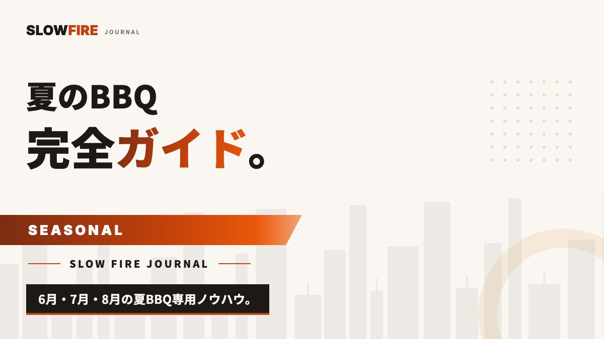

夏のBBQ完全ガイド【6-8月】— 暑さ対策・旬の食材・夜BBQ術
夏にBBQをやったら、暑さでぐったり、虫に刺されて、肉も心配で…結局ただ疲れただけ。そんな夏、ありませんでしたか？実は夏のBBQって、「いかに暑さと上手につき合うか」でほとんど決まるんですよね。気温30℃超え、直射日光、湿度、虫、肉の劣化——夏はいろんなものが敵に変わる季節です。でも、対策さえ知っていれば、夏のBBQは一年でいちばん解放的で、記憶に残る時間になってくれます。SLOW FIRE が提案したいのは、無理に昼に焼かず、朝と夜にずらす時間設計。タープ・保冷・水分・虫・旬の食材という5つの軸で、6月・7月・8月それぞれの正解を整理してみました。

夏のBBQが特別な理由と、最大の敵
夏って、一年でいちばんBBQが盛り上がる季節ですよね。日が長くて、半袖で過ごせて、ビールがおいしい。子どもの夏休みやお盆、海や川やキャンプ場の解放感。BBQという行為が、いちばん「日常から離れる」瞬間に近づくのが、夏なんだと思います。
でもそのいっぽうで、夏のBBQには、ほかの季節にはいない敵がいるんですよね。気温・直射日光・湿度・虫・食材の劣化スピード。この5つを甘く見てしまうと、楽しいはずの集まりが「ただ暑くて疲れた一日」で終わってしまいます。
SLOW FIRE としての結論は、とてもシンプルです。真夏の昼間に、無理して焼かないこと。朝の涼しい時間か、日没後の夜に時間をずらしてあげる。これだけで、夏のBBQは驚くほど快適になりますよ。
6月・7月・8月の気候とBBQ最適時間
同じ「夏」とはいっても、月によって気候はけっこう違うんですよね。6月は梅雨と湿度、7月は猛暑のピーク、8月はお盆と夕立。それぞれの月で取るべき戦略を、ここで整理しておきましょう。
| 6月 | 7月 | 8月 | |
|---|---|---|---|
| 平均気温（東京） | 22〜26℃ | 27〜31℃ | 28〜32℃ |
| 主な天候リスク | 梅雨・湿度 | 猛暑・熱中症 | 夕立・ゲリラ豪雨 |
| 推奨時間帯 | 昼〜夕方OK | 朝または夜のみ | 夜中心 |
| 必須対策 | 雨天プラン・除湿 | タープ・水分・塩分 | 急な雨・落雷対策 |
| BBQ難易度 | ★★☆ | ★★★ | ★★★ |
6月は、梅雨明け前の貴重な晴れ間を狙う月です。気温はまだ低めで、昼間のBBQも比較的快適にできます。ただし湿度が高いので、屋根のあるサイトを選ぶか、タープを大きく張る準備をしておいてくださいね。
7月は、気温と日差しのピークになります。真昼のBBQは熱中症リスクが一気に上がるので、朝7-10時のブランチBBQか、夕方17時以降の夜BBQに完全にシフトするのが正解です。本格BBQ派の方なら、早朝にブリスケットの火入れを始めて、夕方に切り分ける「終日プラン」が、最高にハマりますよ。
8月は、お盆の集まりが増えるいっぽうで、午後はゲリラ豪雨と落雷のリスクが上がる月です。夕立の予報がある日は、午後ではなく夜（19時以降）にスタートをずらしてあげるのが鉄則ですね。雷鳴が聞こえたら、すぐに屋内へ退避することも忘れないであげてください。
暑さ対策の5本柱（タープ・水分・保冷・服装・休憩）
真夏でも、5つの基本対策が揃ってさえいれば、BBQは安全に楽しめます。逆に、ひとつでも欠けると、誰かが体調を崩してしまうんですよね。
1. タープ・日陰の確保
いちばん大事なのは、直射日光を遮ってあげることです。3m×3m以上の大型タープを張って、調理エリアと食卓の両方を覆ってあげるのが理想ですね。サイトに常設の屋根がないなら、自前のタープは必需品だと思っておいてください。ポイントは「風通しを確保しながら日陰を作る」こと。完全に閉じた空間にしてしまうと、熱がこもって、かえって暑くなってしまうんですよね。
2. 水分・塩分の計画的補給
大人1人あたり、1時間に300〜500mlの水分が目安です。ビールはアルコールで脱水を進めてしまうので水分にはカウントしない、というのが熱中症予防の常識なんですよね。水・お茶・スポーツドリンクをローテーションしながら、塩飴・梅干し・塩昆布で塩分もしっかり補給してあげましょう。子どもや高齢の方には、15分ごとに声をかけてあげると安心ですよ。
3. 保冷・クーラーボックス運用
食材用と飲み物用のクーラーボックスは、必ず分けてあげてください。飲み物用は開け閉めが多いので、肉と一緒に入れてしまうと、温度が上がって食中毒リスクが高くなってしまうんです。底に板氷を敷いて、肉は密閉袋に入れて氷に直接触れさせるのが基本ですね。気温35℃の屋外だと、安いクーラーの氷は2〜3時間で溶けてしまうので、高性能クーラー（YETI・コールマンのスチール製など）を選ぶか、氷を1.5倍持っていくか、どちらかを選ぶことになります。
4. 服装と日焼け対策
長袖の薄手シャツ・つばの広い帽子・首元の冷却タオル・サングラスが、夏BBQの基本装備です。意外かもしれませんが、ノースリーブよりも、UVカットの長袖の方が体感温度は下がるんですよね。日焼け止めはSPF50・PA++++を、2時間ごとに塗り直してあげてください。火元担当の方はさらに、難燃性のエプロンと耐熱グローブも着けておきましょう。
5. 休憩のリズム化
1時間ごとに15分の休憩を、全員でとるルールにしてしまうのが効果的です。火元担当が一人で頑張りすぎて倒れてしまうのが、いちばん危険なパターンなんですよね。火を見る人を2人体制でローテーションして、片方は必ず日陰で休む。これが、ホストが最後まで笑顔でいられる秘訣だと思っています。
扇風機・ミスト・冷却プレート
USB扇風機・ハンディファン・冷却ジェルマット・首掛けクーラーといったガジェットは、夏BBQでかなり効果があるんですよね。電源の確保が難しいサイトでは、モバイルバッテリーで動くハンディファンを1人1台、2台ほど持っていくと、体感温度が3〜5℃も下がります。コストパフォーマンスがいちばん高い投資かなと、個人的には思っています。
夏に焼くべき旬の食材リスト
夏のBBQの楽しみのひとつが、旬の食材が安くておいしく手に入ることなんですよね。冬には高い野菜や果物が、夏は産直で叩き売りされていたりします。これを使わない手はありません。詳しい買い物リストはBBQ食材おすすめリスト完全版を見てみてくださいね。
夏野菜（必ず焼くべき5種）
- とうもろこし — 6-8月が最盛期。皮ごと焼くとジューシー、子どもの好物No.1
- ズッキーニ — 縦半分にカット、オリーブオイルと塩でシンプルに
- なす — まるごと焼いて皮を剥き、生姜醤油で。夏の和の定番
- パプリカ・ピーマン — 焼くと甘くなる。赤・黄・緑で彩りも完成
- ミニトマト — 串に刺してさっと焼く。爽やかな酸味が脂と合う
夏の魚介（軽くて満足度高い）
- ホタテ（殻付き） — 殻ごと網に乗せ、汁がぐつぐつしたら醤油バターを一滴
- 有頭エビ — 串に刺して両面1分ずつ。塩レモンが鉄板
- イカ・サザエ — 海BBQの王道。磯の香りが夏らしさを倍増
夏のフルーツ（デザートに焼く）
- パイナップル — 焼くと甘さが2倍。アイスクリームと合わせて最高
- 桃 — 縦半分にカットして焼き、はちみつをかける
- スイカ — 焼かずに冷やしておく。締めの定番
夏の肉の選び方
真夏は重い赤身よりも、豚バラ・鶏もも・ソーセージ・ラムのような短時間で焼ける肉が中心になりがち。ただし夜BBQで時間に余裕があるなら、本格BBQのスペアリブやプルドポークも気温の低い夜帯であれば挑戦可能。爽やかなレモンやライムを使ったマリネが、夏の重さを軽くしてくれます。BBQ用語でいう「マリネ」と「ブライン」の使い分けを覚えておくと、夏の肉料理の幅が広がります。
夏BBQの虫対策・衛生対策
夏のBBQで多くの人が悩むのが虫。蚊・ブヨ・アブ・ハチ・コバエ。対策をしないと、刺されるか食材が汚染されるか、どちらかが必ず起きます。
虫対策の5レイヤー
- 第1層：肌 — ディート/イカリジン配合の虫よけスプレーを2時間ごとに塗布
- 第2層：服 — 長袖長ズボン、足首カバー、白〜淡色の服（黒はハチを刺激）
- 第3層：空間 — ハッカ油スプレーをタープ周りに噴霧、蚊取り線香3-4個を風上に
- 第4層：食卓 — 食材は必ず蓋つき容器・ラップで覆う。コバエ・スズメバチ対策
- 第5層：時間 — 蚊が活発な夕方17-19時は要注意。長袖必須
衛生・食中毒対策
気温30℃を超える環境では、生肉に付着した細菌が20分で2倍に増殖します。夏のBBQで食中毒が出るのは、ほぼ全てクロスコンタミネーション（生肉と調理済み食材の交差汚染）が原因。
- 生肉用トングと調理済み用トングを必ず分ける
- まな板も生肉用と野菜用を分ける（カラフルなプラ製まな板2枚が便利）
- 生肉を触った手は石鹸で洗うかアルコール除菌（ウェットティッシュ×2パック持参）
- クーラーから出した肉は1時間以内に焼き切る
- 食べ残しは持ち帰らず、原則その場で廃棄
夜BBQ術 — 涼しさを味方につける
SLOW FIRE が最も推奨するのが夜BBQ。日没後、気温が下がり、虫の活動も一時的に落ち着き、焚き火と相性が良くなる。アメリカやオーストラリアでは、夏のBBQは夜にやるのが当たり前の文化です。
夜BBQに必要な装備
- LEDランタン2-3個（暖色系2700K前後、メイン照明・食卓・調理エリア用）
- ヘッドライトor手元ライト（火元担当用、両手が空くもの）
- 赤色LED（虫を寄せにくい補助光、テーブル下に置くと足元安全）
- 温度計（食材用＋庫内用） — 暗がりでは肉の焼き色が見えないため必須
- 長袖・長ズボン（夜は蚊が増え、気温も下がる）
夜BBQの献立設計
夜BBQは時間に余裕があるため、本格BBQが映えます。17時に火を起こし、19時に乾杯、22時撤収、というリズムが標準。前菜→メイン→デザート→締めのBBQの起承転結が作りやすいのも夜の魅力です。
- 17時：火起こし＆前菜開始（ソーセージ・ベーコン巻き・チーズ）
- 18時：野菜＆軽い肉（夏野菜のグリル・鶏もも・豚バラ）
- 19時：メイン投入（スペアリブ・厚切りステーキ）
- 20時：仕上げ＆休憩（焚き火を眺めながらの時間）
- 21時：デザート（焼きパイナップル・スモア・冷たいスイカ）
夜BBQと焚き火の組み合わせ
夜BBQの真骨頂は、料理が終わった後の焚き火タイム。グリルの炭が落ち着いた頃、別の焚き火台で薪を燃やし、椅子を並べて静かに過ごす。これがSLOW FIRE の世界観に最も近い時間です。自宅BBQの始め方でも触れていますが、自宅の庭でも焚き火台があれば再現できます。
熱中症・食中毒予防の安全チェックリスト
最後に、夏BBQで絶対に押さえるべき安全チェックリストをまとめます。当日朝、出発前にこの15項目を確認してください。
熱中症予防（7項目）
- 大型タープ・サンシェードを準備した
- 1人1時間300-500mlの水分を確保した（人数×開催時間で計算）
- 塩飴・梅干し・スポーツドリンクを持参した
- 長袖シャツ・帽子・サングラスを着用
- 日焼け止め（SPF50/PA++++）と塗り直し用
- ハンディファン・冷却タオル・氷嚢
- 子ども・高齢者には15分ごとに声をかける担当を決めた
食中毒予防（5項目）
- クーラーボックスを食材用と飲み物用に分けた
- 板氷＋密閉袋で肉を保冷した
- 生肉用トングと調理済み用トングを別に用意した
- アルコール除菌ウェットティッシュを持参した
- 食べ残しは持ち帰らず廃棄するルールを共有した
緊急対応（3項目）
- 救急セット（絆創膏・消毒液・痛み止め）を持参した
- 近隣の救急病院の場所と電話番号を確認した
- 雷鳴・大雨の場合の避難場所を全員で共有した
CONCLUSION
結論
夏のBBQの正解は、「無理に昼にやらない」「対策を5本柱でそろえる」「夜BBQを選択肢に入れる」の3つ。気温30℃を超える真昼に焼くより、朝の涼しい時間か、日没後の夜に時間をずらすだけで、夏のBBQは劇的に快適になります。
夏野菜・夏の魚介・夏のフルーツを織り込み、虫対策と食中毒対策をレイヤーで重ね、熱中症予防の水分・塩分・休憩をリズム化する。これだけで夏のBBQは、一年で最も記憶に残る時間に変わります。SLOW FIRE は、夏こそ「ゆっくり焼く時間」を取り戻す季節だと考えています。日が傾いた頃、汗が引いた頃、炭が落ち着いた頃。その「待つ時間」が、本来のBBQの愉しみです。
FAQ
夏のBBQについてよくある質問
真夏の昼間にBBQをやっても大丈夫ですか？
気温30℃を超える真夏の昼間（11時〜15時）は熱中症リスクが高く、推奨しません。どうしてもやるなら大型タープ＋日陰確保・15分ごとの水分補給・塩飴常備が必須。SLOW FIRE は7-8月は「朝BBQ（7-10時）」または「夜BBQ（17時以降）」への移行を推奨しています。気温と直射日光の両方を避けるのが、夏のBBQを安全に楽しむ最重要原則です。
夏のBBQで肉が傷まないようにする保冷のコツは？
高性能クーラーボックス＋板氷を底に敷き、肉は密閉袋に入れて氷に直接触れさせます。常温で2時間以上放置しない、開閉回数を減らす、飲み物用と食材用のクーラーを分ける、の3点が鉄則。気温35℃の車内に肉を1時間置くだけで食中毒菌が増殖します。生肉用・調理済み用のトングも分けて、クロスコンタミネーションを防ぎましょう。
夏のBBQに合う旬の食材は何ですか？
夏野菜の主役はとうもろこし・ズッキーニ・なす・パプリカ・ピーマン・トマト・オクラ。果物ではスイカ・桃・パイナップル。魚介ならホタテ・エビ・イカ・サザエ。これらはグリルで甘みが増し、肉の合間に挟むと胃が重くなりません。冷たいサイドにトマトとモッツァレラのカプレーゼ、デザートに焼きパイナップル、を組み合わせると夏らしい献立になります。
夏BBQの虫対策は何をすればいいですか？
①ディート/イカリジン配合の虫よけスプレーを到着時と2時間ごとに塗布、②ハッカ油スプレーをタープ周りと食卓に噴霧、③蚊取り線香3〜4個を風上に設置、④食材は必ず蓋つき容器かラップで覆う、⑤ハチを刺激する香水・黒い服を避ける、の5つ。特に夕方は蚊が活発化するので、夜BBQでは長袖・長ズボン・足首カバーを推奨します。
夜BBQのメリットと注意点は？
メリットは涼しさ・熱中症リスク低減・焚き火と相性が良い・幻想的な雰囲気。注意点は照明確保（LEDランタン2〜3個と手元ライト）、虫対策強化、肉の焼き色が見えにくい（温度計必須）、騒音への配慮（21時以降はトーン抑制）、撤収時の見落としリスク。施設の利用時間制限（多くは21時/22時まで）を事前確認しましょう。涼しい時間にロー&スローを始められるので、本格BBQ派にも夜BBQはおすすめです。
PERFECT WITH
夏のBBQに合う爽やかラブ4選
夏野菜・鶏・魚介・ラム — 軽やかな夏の食材に合うラブを厳選